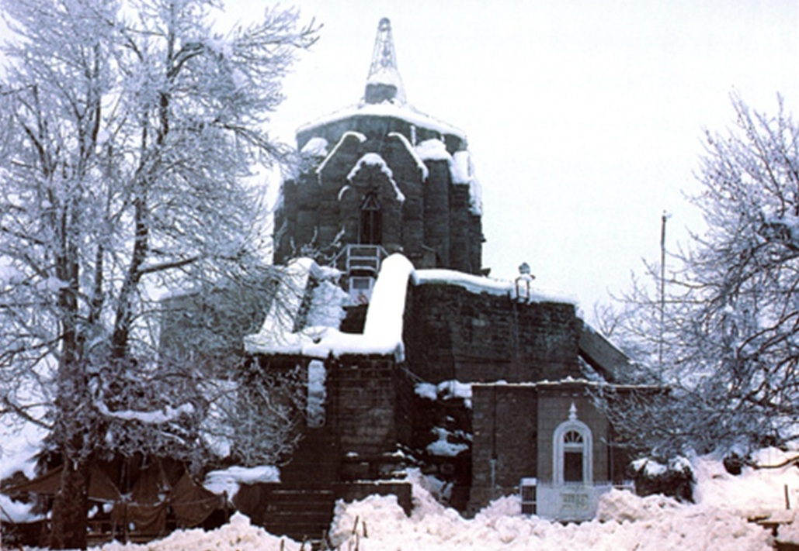
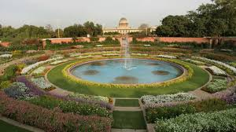
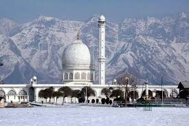
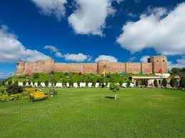
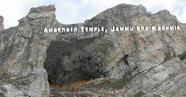

Shankaracharya Temple
The Shankaracharya Temple, also known as the Jyeshteshwara Temple, is situated on Shankaracharya Hill in Srinagar. It offers panoramic views of the city and is dedicated to Lord Shiva.
Mughal Gardens
The Mughal Gardens of Kashmir, including Shalimar Bagh, Nishat Bagh, and Chashme Shahi, are renowned for their beautiful layout and landscaping. They were built by the Mughal emperors in the 16th century.
Hazratbal Shrine
The Hazratbal Shrine is a significant religious site for Muslims in Kashmir. It is located on the northern shores of Dal Lake and houses a relic believed to be a hair strand of the Prophet Muhammad.
Bahu Fort
The Bahu Fort is a historic fort in the city of Jammu, the winter capital of the Indian union territory of Jammu and Kashmir. Maharaja of Parmar Rajputs constructed the ancient fort on the banks on Tawi River, is believed to have been repaired by Bahu Lochan - brother of the traditional founder of Jammu, Jambu Lochan.
Amarnath Temple
Amarnath Temple is a Hindu shrine located in the Pahalgam tehsil of the Anantnag district of Jammu and Kashmir, India. It is a cave situated at an altitude of 3,888 m (12,756 ft),[1] about 168 km from Anantnag city, the district headquarters, 141 km (88 mi) from Srinagar, the summer capital of Jammu and Kashmir, reached through either Sonamarg or Pahalgam. It is an important shrine in Hinduism.